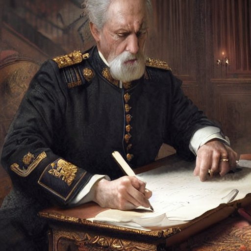

Você questionou a ética do plano e o Lord mudou de ideia

Lord Grey e o Bispo Benedict concordam em resolver suas diferenças em um duelo. Os seguidores de cada um dos lados se preparam para a batalha.
Agora, você tem duas opções: